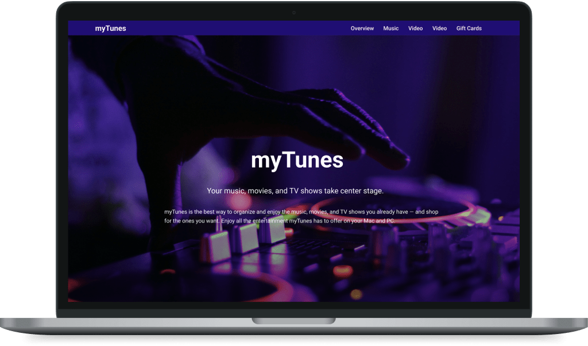

myTunes
Your music, movies, and TV shows take center stage.
myTunes is the best way to organize and enjoy the music, movies, and TV shows you already have — and shop for the ones you want. Enjoy all the entertainment myTunes has to offer on your Mac and PC.
Music
45 million songs. Zero ads.
Stream over 45 million songs, ad-free. Or download albums and tracks to listen to offline. All the music in your personal myTunes library — no matter where it came from — lives right alongside the Orange Music catalog. Start your free three-month trial with no commitment, and cancel anytime.
Start Your Trial NowOrange Music is available in myTunes, and for iOS and Android devices.
The movie and TV collection you always wished for. Granted.
With over 100,000 movies and TV shows to choose from, there’s always something great to watch on myTunes and if you watch on Orange TV 4K, you’ll be able to enjoy a tremendous selection of your favorite content in 4K HDR. So get ready to enjoy episodes of your favorite TV shows or hit movies you’ve been waiting to see — anytime, anywhere. Just tap to play, or even download if you’re going somewhere you won’t have Wi-Fi.
Read More 